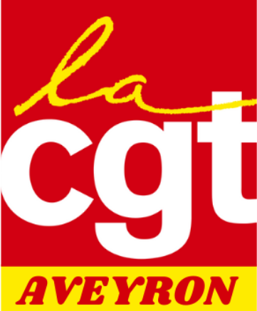

🕒 Séquence prévue : 9h00 - 9h30
- Présentation individuelle (prénom, syndicat, fonction, expérience) - Expression libre : "Pourquoi je suis venu·e aujourd'hui ?"
🕒 Séquence prévue : 9h30 - 10h15
- Travail en binôme : « C'est quoi un syndicat bien organisé pour moi ? » - Mise en commun au tableau : idées forces (ex : démocratie, transmission, respect des rôles…)
🕒 Séquence prévue : 10h15 - 11h00
- Sous-groupes : « Que peut faire un·e adhérent·e CGT ? » - Tri en grand groupe : Droit / Devoir / Pouvoir d'intervention
🕒 Séquence prévue : 11h15 - 12h00
- Activité collective : tri de rôles : Élu / Mandaté / Désigné / Responsable (avec cartes) - Discussion : Comment ces rôles interagissent ? Quels devoirs envers le syndicat ?
🕒 Séquence prévue : 12h00 - 12h30
- Activité "puzzle organigramme" : rôles et missions du Bureau, CE, SG, AG - Débat guidé : Qui impulse ? Qui décide ? Qui contrôle ?
🕒 Séquence prévue : 13h30 - 14h30
- En groupes : construire un ordre du jour pour un congrès syndical - Simulation d'un vote (ex : élection du bureau ou adoption de rapport d'activité)
🕒 Séquence prévue : 14h30 - 15h15
- Réflexion collective : « Où va l'argent de la cotisation ? » - Mise en commun d'idées puis explication du circuit CoGéTise
🕒 Séquence prévue : 15h30 - 16h15
- Jeu de correspondance : qui fait quoi ? (cartes rôles / structures) - Débat guidé : vers qui se tourner en cas de besoin ?
🕒 Séquence prévue : 16h15 - 17h00
- Chacun écrit un engagement personnel à mettre en place dans son syndicat - Tour de parole libre : "Je repars avec…"
Toute personne syndiquée à la CGT, base de l'organisation.
Personne élue par les salarié·es lors d'élections professionnelles (ex : CSE).
Militant·e désigné·e par le syndicat pour représenter la CGT dans une instance extérieure.
Militant·e élu·e ou désigné·e à la direction du syndicat (ex : SG, trésorier·e).
Réunion de tous les syndiqué·es du syndicat, instance de décision souveraine.
Temps fort statutaire pour définir l'orientation, élire la direction et faire le bilan.
Instance élue qui prend les décisions collectives entre deux AG.
Équipe restreinte chargée d'animer au quotidien les décisions de la CE.
Structure CGT sur un territoire, proche des syndicats locaux.
Structure CGT à l'échelle du département, appui aux syndicats et formation.
Structure professionnelle regroupant les syndicats d'une même branche d'activité.
Organisation nationale de la CGT, coordonne l'ensemble des structures et définit les orientations générales.
Instance représentative du personnel dans l'entreprise, remplaçant les anciennes instances (CE, DP, CHSCT).
Système de répartition des cotisations syndicales entre les différentes structures de la CGT.
Document fondamental définissant les règles de fonctionnement d'un syndicat, ses objectifs et son organisation.
Premier·ère responsable d'un syndicat, élu·e pour coordonner l'activité et représenter l'organisation.
Responsable de la gestion financière du syndicat, des cotisations et de la politique financière.
Action de recruter de nouveaux adhérents, élément essentiel du renforcement de l'organisation.
Contribution financière des adhérents (1% du salaire net), ressource principale du syndicat.
Principe fondamental de la CGT garantissant la participation des adhérents aux décisions et orientations.
Mission confiée par le syndicat à un·e militant·e pour le représenter dans une instance ou une négociation.
Dispositif d'éducation permettant aux militants d'acquérir des connaissances et compétences nécessaires à l'action syndicale.
Demande formulée par le syndicat pour améliorer les conditions de travail ou les droits des salariés.
Mobilisation des salariés (grève, manifestation, pétition) pour faire aboutir des revendications.
Processus de discussion entre employeurs et syndicats pour établir des accords sur les conditions de travail.
Capacité légale d'un syndicat à représenter les salariés, mesurée par les résultats aux élections professionnelles.
Pour imprimer ou exporter en PDF cette séquence :